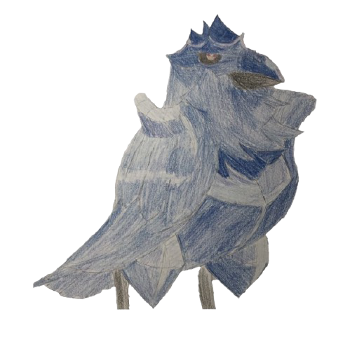

|  |
今年も早いものでもう下半期に入ってしまいました。 今年の上半期もたくさんの良い作品に出会えた気がします。特に、アニメ映画が豊作だった気がします。 というわけで早速レビューに入りたいと思います。 |
あらすじ
高校生・夏生は明るくて人気者の教師・陽菜にかなわぬ恋をしていた。だが、合コンで出会った陰のある少女・瑠衣と関係をもってしまう。そんなとき、父が再婚することに。相手が連れてきた子供が、なんと陽菜と瑠衣で！？ カゲキな新生活が今、始まる！(引用元: https://comic.pixiv.net/works/2319)
評価
★★★★★★★★ (8/10)
感想
このアニメ、本当に「こうなってほしくはないなー」って思うことがほぼ確実に現実のものとなります。
例えば、ドア開けっぱなしで主人公とある女性がキスをしていて「ここで他の人が目撃したらまずいことになるんだろうなあ」と思う矢先に本当に目撃されたりします。 こういうことがかなりのペースで起こるので、見るのにかなりのカロリーを要します。正直見ていて結構疲れます。
内容自体はかなりドロドロしていますが面白いです。恋愛アニメとしてもかなり見ごたえがあると思いますが、やはり見ていて疲れます。 アニメの続きは今まで以上に壮絶な展開が続くと聞いて怖気づいてしまっていまだに原作を買っていません。
あらすじ
斉木楠雄は超能力者である。楠雄は目立つことを嫌い、静かな日常とコーヒーゼリーをこよなく愛し、日々平凡に生きることを願っているのだが、なぜか彼の周囲はひと癖もふた癖もある人物ばかり...(引用元: https://www.saikikusuo.com/)
評価
★★★★★★★★★ (9/10)
感想
斉木楠雄のアニメの続きで、Netflix独占配信だったので少し心配だったが、今までの斉木楠雄とクオリティは全く変わっていなく面白かった。 斉木楠雄に限った話ではないが、ギャグ漫画の作者って人の笑うツボをよく理解していてすごいと思う。
あと斉木楠雄は超能力の制限(テレポートは5分ごと(だったっけ?)にしか使えない等)の設定がうまくできていて、無敵の主人公のはずなのにハラハラする展開が多くて面白かった。
あらすじ
いくつもの世界線を巡る無限の彷徨。その過酷な旅の中で、岡部は紅莉栖を死の運命から救い出すことを、ついに諦めた。そして、再び大学に通い始めた彼は、平凡な日常に埋没していく。それでも心の傷を癒しきれず、メンタルクリニックへの通院を続ける岡部の中で、いつしか白衣をまとった「鳳凰院凶真」の顔は封印されていた。(引用元: http://steinsgate0-anime.com/)
評価
★★★★★★★★★★ (10/10)
感想
本当に面白かった。シュタインズ・ゲート無印できれいに伏線回収して終わりかと思いきや、ゼロでまだまだ伏線がはられていたことに気づいたときは本当に感激した。無印しか見てない人は絶対に見たほうがいいと思う。
また、どの登場人物もいいキャラしてるのがよかった。(途中で崩壊してる人いた気がするけど)
あらすじ
斉木楠雄は超能力者である。楠雄は目立つことを嫌い、静かな日常とコーヒーゼリーをこよなく愛し、日々平凡に生きることを願っているのだが、なぜか彼の周囲はひと癖もふた癖もある人物ばかり...(引用元: https://www.saikikusuo.com/)
評価
★★★★★★★★★ (9/10)
感想
斉木楠雄のアニメの続きで、Netflix独占配信だったので少し心配だったが、今までの斉木楠雄とクオリティは全く変わっていなく面白かった。 斉木楠雄に限った話ではないが、ギャグ漫画の作者って人の笑うツボをよく理解していてすごいと思う。
あと斉木楠雄は超能力の制限(テレポートは5分ごと(だったっけ?)にしか使えない等)の設定がうまくできていて、無敵の主人公のはずなのにハラハラする展開が多くて面白かった。
あらすじ
名門・私立百花王学園。この学園には階級制度が存在する。生徒会を頂点とするこの学校は「ギャンブル」に支配されている。勝てば天国。負ければ地獄。ギャンブル強者は羨望、弱者は被虐のクルった学園。そんな学園に、一人の少女が転校してくる。彼女の名前は蛇喰夢子……。(引用元: https://kakegurui-anime.com/)
評価
★★★★★★ (6/10)
感想
こういう系統のアニメはあまり見たことがなかったので新鮮味があった。ゲームは実際には存在しないものが多く面白かった。(だからこそ欠陥があって色々イカサマできるのだが)
ただ、見ているうちに"またどっかにイカサマがあるんだろうなあ"と思ってきてしまう所はあった(ちょっとワンパターン...?)。 また、あまり好きになれないキャラがそこそこいた。内容自体は面白かった。
あらすじ
ニューヨーク。並外れて整った容姿と、卓越した戦闘力を持つ少年・アッシュ。ストリートギャングを束ねる彼は手下に殺された男が死ぬ間際に“バナナフィッシュ”という謎の言葉を発するのを聞く。時を同じくして、カメラマンの助手として取材にやってきた日本人の少年・奥村英二と出会う。二人はともに“バナナフィッシュ”の謎を追い求めることに──。(引用元: https://bananafish.tv/)
評価
★★★★★★ (6/10)
感想
ED曲が好きなバンドの曲だったので視聴した。後半になってくると結構見ていてつらくなってきた。
最近のアニメにしてはちょっとテンポがおそいかも...?、と思って調べてみたら、原作が1985年らしい。その分主要キャラクターたちの友情が育まれていくシーンがしっかり描かれていた印象があった。その分キャラが死ぬのがきつかった。
結構昔の作品で少女コミックに連載されていた(だからちょっとBLっぽい?)ので、最近のアニメとはかなり毛色が違うが、そこそこ面白かった。とりあえず英二がいい子だった。ショーターもいい奴だったな...